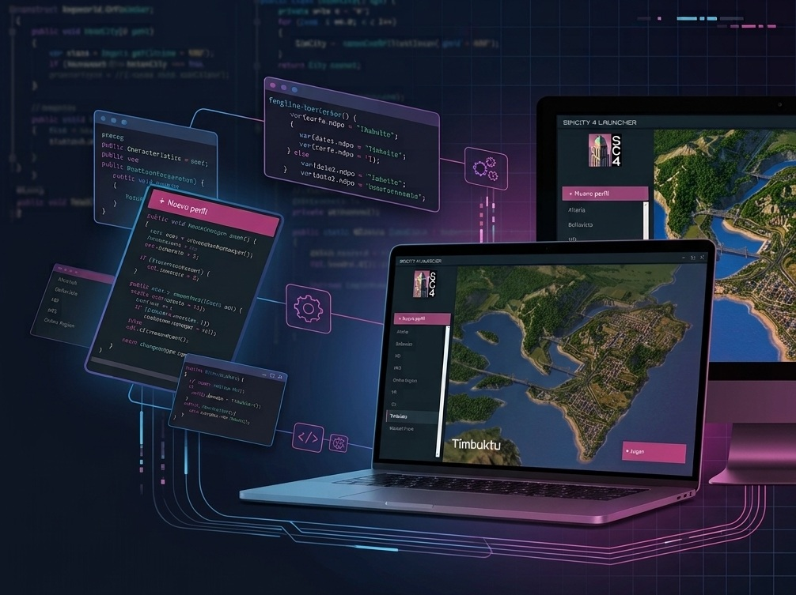

Perfiles a tu manera
Guarda varias formas de iniciar el juego y elige entre ellas desde una lista clara. Crea, edita y organiza perfiles cuando quieras.
HECHO PARA VOLVER A TU CIUDAD
Un launcher de escritorio para organizar tus perfiles de SimCity 4 y arrancar la ciudad que te apetece jugar.
Versión beta para Windows · El juego no está incluido

MENOS CLICS, MÁS CIUDAD
Un punto de entrada sencillo para tus distintas partidas, sin tocar cómo tienes instalado SimCity 4.
Guarda varias formas de iniciar el juego y elige entre ellas desde una lista clara. Crea, edita y organiza perfiles cuando quieras.
Añade una imagen de fondo a cada perfil para distinguir tus ciudades y hacer tuyo el launcher.
Los perfiles y fondos se guardan localmente en tu equipo. El launcher no incluye el juego ni necesita subir tus partidas.
EN UN MOMENTO
Necesitas Windows y una copia de SimCity 4 instalada. El juego no se distribuye con el launcher.
Consulta las instrucciones completasLISTO CUANDO TÚ LO ESTÉS